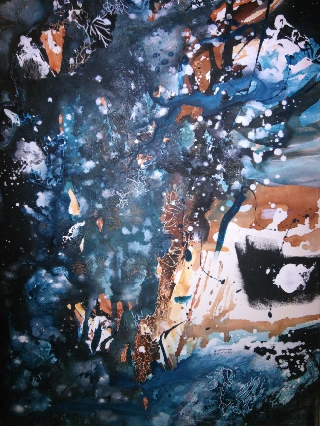
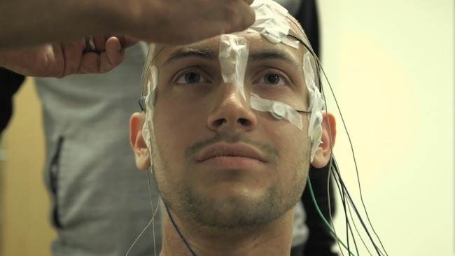

Ce lundi, un nouveau chapitre s’est ouvert dans l’histoire tumultueuse de l’acide lysergique diéthylamide (LSD), dont les effets psychédéliques – « révélateurs de l’âme », en grec – furent découverts en 1943 par le chimiste Albert Hofmann (1906-2008).
Bien que les substances psychédéliques comme la mescaline, la datura ou la psilocybine soient utilisées depuis des millénaires en certains points du globe (Inde, Amérique du Sud), leur mode d’action neurobiologique reste mystérieux et le LSD n’échappe pas à la règle.
Si l’on sait qu’ils impliquent le système sérotoninergique (comme la MDMA ou les antidépresseurs), le lien entre ces modifications chimiques et les effets cognitifs constatés demeure quasiment inconnu.
Comment de si petites doses (quelques dizaines de microgrammes) peuvent-elles engendrer de telles modifications de la conscience, altérer si profondément le rapport aux couleurs, aux sons et aux autres, ou encore générer ces étranges « révélations » qui s’apparentent parfois à des points de non-retour personnels, professionnels, voire spirituels ?
Animaux sous LSD
C’est la question à laquelle un groupe de neuroimageurs et de psychiatres britanniques a tenté de répondre, aidé en cela par une campagne de financement participatif lancée en 2015.
Depuis le scandale provoqué dans les années 1960 à Harvard par les recherches de Timothy Leary (héraut du « LSD thérapeutique » emprisonné sous la présidence Nixon), la substance était jusqu’alors presque exclusivement administrée à des animaux (et, occasionnellement, à quelques communistes torturés dans les laboratoires secrets de la CIA).
Or, chez les animaux, le LSD est typiquement considéré sous un angle pathologique plutôt que thérapeutique – à savoir, comme modèle de « psychose induite » utile pour mimer certains aspects de la schizophrénie.
Le crowdfunding à la rescousse
Le LSD et les psychédéliques sont donc sortis du périmètre de la psychologie scientifique et clinique pendant presque 50 ans, malgré l’intérêt continu d’intellectuels comme Sartre, Foucault, Huxley [PDF] ou Castaneda [PDF],

Mais avec l’avènement des neurosciences cognitives et la découverte du potentiel antidépresseur de la kétamine au début des années 2000, il semblait inévitable que quelques « têtes brûlées » finissent par céder à la curiosité et se décident à passer le LSD sous la loupe des nouveaux outils de neuroimagerie que sont l’IRM et la magnétoencéphalographie.
C’est donc chose faite grâce au crowdfunding utilisé par les chercheurs David Nutt, Amanda Feilding et Robin Carhart-Harris pour contourner la frilosité des agences de financement traditionnelles et réaliser la première expérience de neuroimagerie entièrement dédiée au LSD.
Une vingtaine de testeurs
Psychiatre de renom, David Nutt est connu pour ses prises de position radicales contre la consommation excessive d’alcool au Royaume-Uni, ainsi que pour son discours inhabituel sur certaines drogues comme la MDMA et le THC.
Si sa démarche a suscité d’intenses débats au sein de la communauté scientifique et chez certains consommateurs, son approche vient de porter ses premiers fruits : une publication dans la revue de l’Académie des Sciences américaine (PNAS).

Une vingtaine d’individus ont participé à un protocole élaboré combinant IRM (pour la localisation spatiale des activités cérébrales) et magnétoencéphalographie (pour leur caractérisation temporelle).
Afin d’isoler les activités spécifiquement modifiées par le LSD, chaque participant devait passer l’ensemble du protocole deux fois :
après avoir ingéré la substance ;
après avoir ingéré un placebo inactif biologiquement.
A chaque passation, des périodes de repos alternaient avec l’écoute de musique ou le visionnages de films muets. Pour cette première publication, seules les périodes de repos ont été analysées, mais elles sont déjà riches d’enseignement.
« Voir » les yeux fermés
A des doses très petites (moins de 50 microgrammes), le LSD produit simplement un sentiment d’euphorie, stimule la créativité ou exacerbe la perception, de telle sorte que la réalité paraît plus belle et significative, mais il n’induit pas nécessairement d’hallucinations au sens strict du terme.
En revanche, à la dose intermédiaire utilisée dans l’étude (75 microgrammes) les utilisateurs sensibles constatent déjà l’apparition d’une imagerie visuelle complexe, dynamique et colorée, principalement perceptible dans l’obscurité. A quelques déformations près, le monde extérieur défile alors normalement lorsque les yeux sont ouverts, tandis que de riches hallucinations se manifestent dès que les paupières se ferment.
Pour tenter d’expliquer ce phénomène, les chercheurs ont analysé la « connectivité fonctionnelle » de différentes aires cérébrales [PDF].
Ils ont ainsi découvert que le couplage des activités entre l’aire visuelle primaire V1 (en rose) et le reste du cerveau (zones rouges-jaunes) était profondément renforcé par le LSD – et ce, d’autant plus que les hallucinations ressenties par les sujets étaient intenses.

Ces résultats laissent penser que la substance permettrait en quelque sorte de « voir » ce qu’il se passe dans notre propre cerveau, en désinhibant certaines connexions dites « réentrantes » via les récepteurs sérotoninergiques de type 5HT2A.
D’après Robin Carhart-Harris, leader de l’étude :
« Avec le LSD, les réseaux neuronaux perdent en partie leur intégrité. Les systèmes cérébraux deviennent moins ségrégés, et les différents réseaux commencent à se fondre les uns dans les autres. Globalement, le cerveau devient plus connecté, et il opère de manière plus flexible »
De nouveaux horizons
L’analyse des signaux électrophysiologiques (MEG) montre aussi que le LSD induit une diminution générale de la puissance des oscillations électromagnétiques à la surface du scalp, qui se double d’une accélération du rythme alpha.
Or ce dernier est directement lié aux processus attentionnels et une hypothèse très en vogue voudrait qu’il soit impliqué dans le filtrage des informations traitées par notre cerveau. S’ils sont réplicables et robustes, ces résultats inattendus seront donc abondamment examinés, cités et commentés dans un futur proche.
En filigrane, les travaux de David Nutt et Robin Carhat-Harris donnent une consistance plus scientifique à une hypothèse ancienne formulée par Aldous Huxley dans « les Portes de la perception » [1954, PDF], ouvrage influent dont Jim Morrison s’inspirera d’ailleurs pour nommer son groupe (« The Doors »).
Selon Huxley (également auteur du « Meilleur des Mondes »), les psychédéliques supprimeraient une tendance tenace de notre cerveau à privilégier le traitement de ce qui peut lui être utile pour la survie et la reproduction, au détriment des innombrables autres sources d’informations qui l’entourent et qui le constituent.
En affaiblissant les multiples filtres qui forcent normalement notre pensée à rester « utilement collée » à la réalité, le LSD ouvrirait donc des horizons désaltérants à la conscience. Parmi ceux-là, figurent évidemment les filtres qui nous dispensent habituellement de « voir » les contenus dynamiques générés par notre propre cerveau !
« Dissoudre l’ego » dans un scanner ?
Déjà stupéfiante au niveau perceptuel, l’action du LSD ne se borne cependant pas aux hallucinations « yeux fermés », ni même à celles – plus ou moins dérangeantes – qui persistent une fois les yeux ouverts avec des dosages plus conséquents.
Si c’était le cas, la peinture et le cinéma pourraient presque retranscrire l’expérience et permettre au néophyte d’en saisir l’essentiel. Mais, avec de plus hautes doses et dans certains contextes, le LSD et les autres hallucinogènes dits indoliques facilitent l’émergence d’un état impossible à décrire verbalement ou picturalement.

Certains appellent « dissolution de l’ego » cette modification drastique des rapports affectifs, spatiaux et temporels entretenus avec la réalité.
Pour le Dr Carhart-Harris :
« [Le phénomène] est souvent accompagné d’intuitions nouvelles à propos de nous-mêmes, de notre parcours, de nos relations avec les autres et avec le monde en général. En fait, cela va main dans la main avec des sentiments de nature spirituelle et mystique. »
Ces expériences extrêmement intimes aboutissent souvent à une appréhension plus sereine de la mort, ce qui rend le LSD utile pour soulager certains patients en fin de vie, et ce sont elles qui justifient l’emploi du terme « enthéogène » (qui « rapproche du divin ») pour qualifier l’action des psychédéliques – là où des drogues plus superficielles comme la MDMA sont simplement qualifiées d’empathogènes (qui « rapproche d’autrui »).
Des ressentis très subjectifs
Bien que la dimension spirituelle du LSD soit a priori étrangère (et quelque peu contraire) aux prémisses du raisonnement scientifique, les auteurs de l’étude ont tout de même voulu savoir si la « dissolution de l’égo » avait une contrepartie neurobiologique dans leurs données.
Pour ce faire, ils ont donc recoupé les questionnaires quantitatifs remplis par les sujets (voir ci-dessous) avec les différents signaux cérébraux récoltés.

Les analyses du signal IRM confirment ce qui avait déjà été observé chez les consommateurs d’ayahuasca et de psilocybine, à savoir qu’il existerait une corrélation entre les sensations de « dissolution de l’égo » et la modification du couplage fonctionnel de trois structures appartenant à un réseau cérébral actif « par défaut », lui-même relié à maintes reprises à la pensée auto-référentielle et au concept de « soi ».

En outre, les données électrophysiologiques suggèrent que cette dissolution s’accompagne d’une désynchronisation à grande échelle des rythmes alpha, ce qui correspond peut-être à la suppression de certains mécanismes inhibiteurs, actifs dans les états de conscience dits « normaux ».
Sans préjuger de la qualité des analyses effectuées, il y a cependant de quoi être légèrement dubitatif quant à la possibilité d’induire (et de quantifier) une authentique « dissolution de l’ego », dans un scanner, avec des doses aussi modérées de LSD.
L’interprétation des résultats est ici sujette à caution, d’autant plus que contrairement aux hallucinations visuelles (éventuellement quantifiables par des tests rigoureux), les ressentis d’ordre spirituel sont très subjectifs et personnels, c’est-à-dire difficilement objectivables par un questionnaire.
A la frontière entre science et spiritualité
En conclusion, les recherches sur le LSD possèdent indéniablement un grand potentiel pour les neurosciences fondamentales comme pour la psychiatrie, mais la rationalisation excessive de l’expérience psychédélique comporte aussi un double risque.
D’une part, l’association entre états psychédéliques et activités cérébrales peut laisser penser que les premiers sont expliqués par les secondes, ce qui est à la fois faux et illusoire. Il est crucial de rappeler que les chercheurs interprètent ici des corrélations (entre états mentaux et cérébraux) qui ne constituent jamais une démonstration de causalité, et qui n’épuisent en aucun cas la richesse des vécus associés.
D’autre part, lorsque la neuroimagerie se penche sur la méditation, sur la ferveur religieuse ou sur les psychédéliques, elle donne parfois le sentiment de mélanger les genres et de flouter des frontières qui permettent généralement à la rationalité scientifique et la spiritualité de se protéger l’une de l’autre. La première de ces frontières étant sans doute la démarcation entre la quête de vérité objective et la quête de sens, qui s’opère dans l’espace de la subjectivité.
Un zeste de prévention
Bien que la toxicité biologique du LSD soit considérée comme quasi-nulle (contrairement à la majeure partie des drogues de synthèse, MDMA comprise), il ne faut pas négliger sa potentielle toxicité psychique. En effet, si le LSD ne détériore ni la santé physique ni la santé mentale à l’échelle de la population (on observe même une tendance inverse), sa consommation peut causer certains problèmes à l’échelle individuelle.
Premièrement, elle peut révéler parfois une schizophrénie latente ou d’autres troubles psychiatriques chez les sujets jeunes [PDF].
Deuxièmement, le LSD est plus fréquemment associé que d’autres psychédéliques à l’apparition de troubles connus sous le nom de hallucinogen-persisting perception disorders, incluant une résurgence ponctuelle des symptômes normalement liés à la consommation aiguë (le fameux « flash-back » ou remontée acide), des perturbations visuelles (comme la diminution de la capacité à discriminer les couleurs) et diverses instabilités émotionnelles.
Troisièmement, en élargissant momentanément la conscience, l’expérience psychédélique amène parfois l’individu à envisager de nouvelles questions et de nouvelles représentations du soi, du monde et des autres. Actuellement considérés comme bénéfiques à long terme, ces événement peuvent être déroutants à court terme, pour le consommateur et son entourage, en particulier si les hallucinogènes sont mal appréhendés (d’où l’utilité de diffuser les connaissances scientifiques sur le sujet).
Outre que la prise de LSD reste parfaitement illégale, il peut donc lui arriver d’être nocive, en particulier chez les moins de 25 ans, chez les individus sévèrement hypertendus, et plus généralement lorsqu’elle survient dans des contextes émotionnellement négatifs.
L’ingestion simultanée de psychostimulants ou d’alcool en grande quantité est enfin fortement déconseillée (car elle facilite la survenue d’épisodes paranoïaques et à la désinhibition de certains comportements à risque).
Merci à Bahar Gholipour qui m’a transmis la publication avant sa sortie officielle.